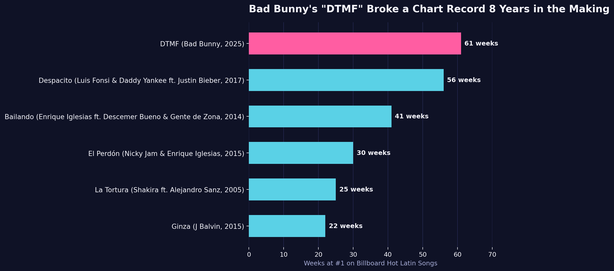

DTMF Broke the Record — But Bad Bunny Got There Faster Than Anyone Ever Has
Bad Bunny's "DTMF" just spent 71 weeks (and counting, as of early August 2026) at #1 on Billboard's Hot Latin Songs chart — more than any single song has ever managed in the chart's 40-year history. Zoom out to a full career, though, and the all-time record for total time at #1 still technically belongs to Enrique Iglesias. The catch: it took him 21 years to build it. Bad Bunny may have already matched it in seven.

The dataset
Three layers here, all Billboard Hot Latin Songs chart data (est. 1986):
- Single-song record progression (6 songs) — the handful of songs that have each held the record for longest #1 reign at some point since 1986, verified via Billboard's own chart-beat reporting.
- Enrique Iglesias's full catalog (27 songs) — every #1 hit of his career, sourced from Wikipedia's "List of Billboard Hot Latin Songs chart achievements and milestones." We summed all 27 songs' individual week counts and got exactly 189 — matching Wikipedia's independently-stated career total for Iglesias, the current all-time cumulative leader. That match is our confidence check on the per-song figures.
- Bad Bunny's full catalog (17 songs) — same Wikipedia source. His song count (17) is independently confirmed by Billboard reporting ("his 17th chart-topper, breaking a tie with Luis Miguel"). But summing his 17 songs' weeks gives 194 — a number no news source has explicitly confirmed as his official career total. We're disclosing that clearly: 194 is our own calculation from published per-song data, not a headline-reported figure. Older articles (from earlier in 2026, before DTMF's run stretched past 57+ weeks) say he "hasn't yet surpassed" Iglesias's 189 — which was likely true when written, but may no longer be, given how much DTMF alone has grown since.
Full data and code for this post — including all three CSVs and the analysis script — are in the Track Record GitHub repo.
The method
- Compiled the 6-song single-record progression and the two artists' full #1 catalogs (44 songs total), each with release year and weeks at #1.
- Cross-checked the Enrique Iglesias list by summing it against his independently-reported 189-week career total — it matched exactly, which gave us confidence in the underlying data source.
- To compare two careers that started 23 years apart on a fair basis, we re-indexed both artists' timelines to "years since their first #1 hit" instead of calendar year, then plotted cumulative weeks at #1 against that shared clock.
- Also charted all 44 individual songs from both artists on one ranked bar chart.
What it showed
On the single-song record (panel 1): DTMF's 71 weeks has now beaten Despacito's former 56-week record by 15 weeks, and it's still running — up from 66 weeks as of February 2026.
On the career comparison (panel 2), plotted on the same "years since first #1" clock: Bad Bunny hit 194 combined weeks at #1 within 7 years of his first chart-topper (2018's "MIA" and "Te Bote"). Enrique Iglesias took 21 years — from his first #1 in 1995 to 2016 — to accumulate his 189. Bad Bunny's climb is steep and recent (driven heavily by DTMF's 71-week run); Iglesias's is a long, steady accumulation across two and a half decades, one hit-filled era after another.
On the full 44-song breakdown (panel 3): past their two respective long-reigning anchors (DTMF at 71, Bailando at 41), the rest of both catalogs looks fairly similar in shape — a handful of multi-week hits, and a long tail of singles that only spent one week at #1. Ten of Iglesias's 27 hits, and 6 of Bad Bunny's 17, were one-week wonders at the top.